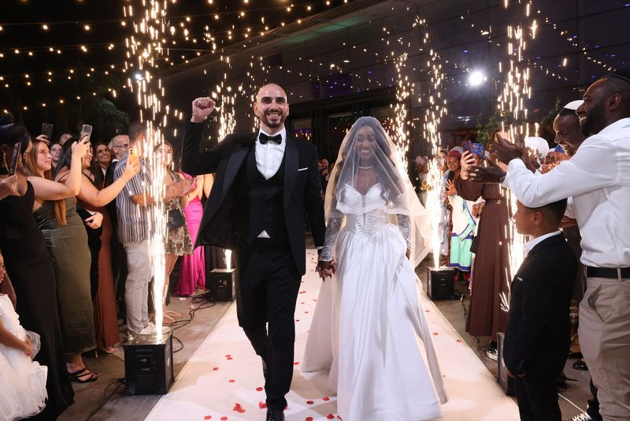
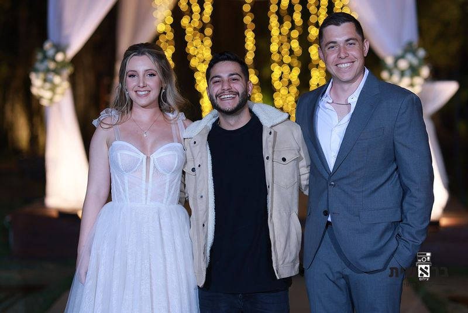
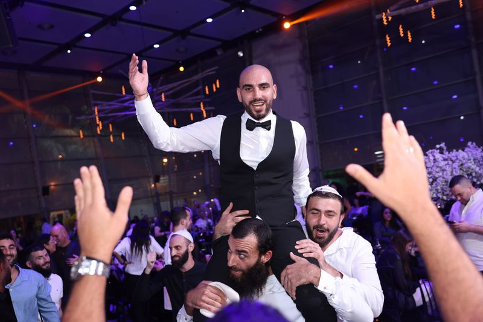

אלמוג כהן · שלוש סקיצות לאתר החדש
שלושה כיוונים לאתר התדמית, כולם עם התמונות האמיתיות: חתונות, זוגות ואווירה. כל סקיצה היא אתר שלם בעמוד אחד, מהפתיחה ועד טופס בדיקת התאריך. פותחים בטלפון ובמחשב.

סקיצה 1הלילה · קולנועי
שחור, לבן חם, ואקסנט ענבר אחד מהזיקוקים. כותרות ענק בקרנטינה, והלילה מסופר רגע אחרי רגע עם תמונה שמתחלפת בגלילה.
אופי: עוצר נשימה, יוקרתי, עריכתי
סקיצה 2ההזמנה · הזוגות קודם
בהיר, סריף עברי, ותמונות בקשתות חופה. מרגיש כמו הזמנה לחתונה: סדר הערב, הזוגות, ומכתבי התודה שלהם.
אופי: עדין, אישי, מכוון לזוג
סקיצה 3הרחבה · אנרגיה
צבעי המותג כניאון על רקע כהה. פתיחה ברשת תמונות, גלריית אווירה אופקית, והלילה כמד אנרגיה עם נוריות.
אופי: אנרגטי, ממיר, מובייל קודםהסקיצות משתמשות באותו תוכן (טקסטים מהאתר הקיים, הודעות אמיתיות מהזוגות, וואטסאפ 050-242-7616). אפשר לבחור אחת, או לשלב: למשל הפתיחה של 1 עם הזוגות של 2 והטופס של 3.